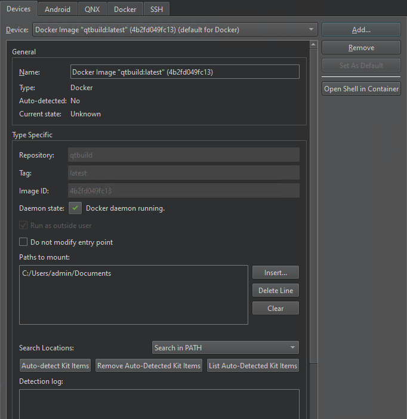

Adding Docker Devices
Create Docker devices from Docker images and use them to build, run, and debug applications. A Docker container operates like a virtual machine but uses less system resources at the cost of being less flexible.
Docker support is experimental. While Linux, macOS, and Windows hosts are supported in principle, Linux is the recommended platform.
Currently, only CMake is supported for building applications in the Docker container.
To build, run, and debug applications on Docker devices, you must install and configure docker-cli on the development host. Qt Creator automatically detects build and run kit items, such debuggers and Qt versions, in the Docker container and creates kits for the devices.
You can use images that are available locally. You can pull images from Docker hub or other registries using the docker pull command. To check that an image is available locally, run the docker images command in a terminal.
Enabling Docker Plugin
To enable the experimental Docker plugin:
- In Qt Creator, select Help > About Plugins > Utilities > Docker (experimental).
- Select Restart Now to restart Qt Creator and load the plugin.
Adding Docker Images as Devices
To add a Docker image as a device:
- Select Edit > Preferences > Devices > Docker and enter the path to the Docker CLI in the Command field.

- Select Devices > Add > Docker Device > Start Wizard to search for images in your local Docker installation.
- Select the Docker image to use, and then select OK.
- In Devices, check and modify Docker device preferences.

- Select Run as outside user to use the user ID and group ID of the user running Qt Creator in the Docker container.
- Select Do not modify entry point to stop Qt Creator from modifying the entry point of the image if the image starts into a shell.
- In Paths to mount, specify host directories to mount into the container, such as the project directory.
- In Search locations, select where to search for kit items.
- Select Auto-detect Kit Items to find kit items and to create kits for the Docker device.
- Select Apply to save your changes.
The following sections describe the Docker device preferences in more detail.
Selecting Docker Images
The Docker Image Selection dialog displays a list of Docker images in your local Docker installation. You can sort the images according to the repository name or tag or the image ID or size.

Select Show unnamed images to show images that are not tagged.
Double-click an image to select it.
Modifying Entry Points
The entry point of a Docker container is specified in the container settings and started as the main process when starting the container. The entry point can be a shell, an SSH server, or another process, for example. By default, Qt Creator modifies the entry point before it starts a container to make sure that the main process is an sh shell.
To stop Qt Creator from modifying the entry point, select Do not modify entry point. However, if the entry point you specify is not a shell, Qt Creator cannot start the container.
Specifying Paths to Mount
You can either copy your project files into the Docker container or specify paths to them in Paths to mount. Shared mounts are restricted to locations in the host system that can end up in the same absolute location in the Docker container. On Windows, network mounts cannot be used as shared mounts.
The paths in Paths to mount are mapped one-to-one to the Docker container. Select Insert to browse directories to add. Select Delete Line to delete the selected path or Clear to delete all paths.
Auto-detecting Kit Items
Select Auto-detect Kit Items to find kit items and create kits for the Docker device. You can search for kit items in the device's PATH or in the specified directories.
In Search locations, select:
- Search in PATH to find kit items in PATH.
- Search in Selected Directories to find kit items in the selected directories.
- Search in PATH and Additional Directories to find kit items in the PATH and in the selected directories.
When searching in directories, enter a semicolon-separated list of directory paths in the Docker image to scan for kit entries.
To list the automatically detected kit items, select List Auto-Detected Kit Items. To remove them, select Remove Auto-Detected Kit Items.
Editing Docker Device Kits
Select Edit > Preferences > Kits to check that the automatically generated kits point to the appropriate kit items.
To specify build settings:
- Open a project for an application you want to develop for the device.
- Select Projects > Build & Run to enable the kit that you specified above.
Select Run to specify run settings. Usually, you can use the default settings.